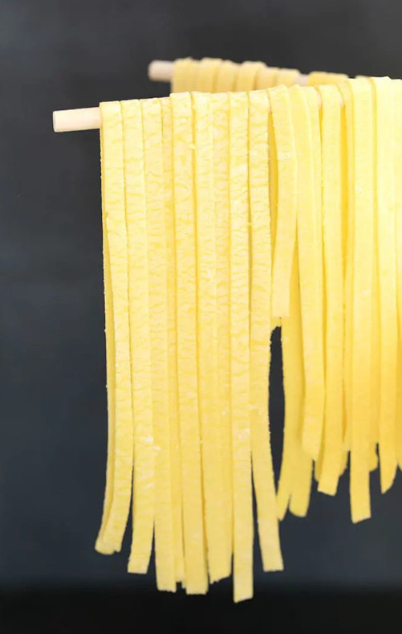

Gluten Free Egg Noodles

Description
Rich, super tender gluten free egg noodles are made with 4 simple ingredients, and you probably have them all in your gf pantry. Make them with or without a pasta machine and add them to noodle soup or enjoy them alone!
Ingredients
- 1 cup (140 g) all purpose gluten free flour blend
- ½ teaspoon xanthan gum omit if your blend already contains it
- 5 tablespoons (40 g) tapioca starch/flour plus more for sprinkling
- 2 (100 g (weighed out of shell)) eggs at room temperature
- 4 (100 g) egg yolks at room temperature
- 1 tablespoon (14 g) extra virgin olive oil
Steps
- In the bowl of a food processor fitted with the steel blade, place the flour blend, xanthan gum, and tapioca starch/flour.
- Place the top on the food processor, remove the hopper and add an egg or egg yolk to moisten the flours. Turn the food processor on low and continue adding the eggs and egg yolks slowly.
- With the food processor still working, add the olive oil slowly. The dough will clump to one side of the food processor.
- Continue to process until well-combined. The dough may still be a bit sticky.
- Sprinkle a flat surface lightly with tapioca flour, and transfer the dough to the surface. Divide the dough into 3 equal parts.
- Working with one part at a time, and covering the others with plastic wrap, knead the dough until smooth.
- Roll the dough on the dusted surface into a rectangle that's a bit more than 1/8-inch thick, dusting liberally with additional tapioca starch to prevent it from sticking to the surface or the rolling pin.
- Move the dough frequently. The rectangle is easiest to handle if it's no more than 4-inches wide and about 14-inches long.
- Trim any rough edges and cut into strips with a pastry cutter, pizza wheel, or sharp knife. Hang the pasta on the spindles of a pasta drying rack, or dust lightly with more flour and roll into “nests” and place on a lightly floured surface. Repeat with the remaining dough.
- Roll the dough by hand with a rolling pin into a rectangle about 1/2-inch thick, sprinkling liberally with additional tapioca starch as necessary to prevent sticking to the surface or the rolling pin.
- Dust the rolled-out dough lightly with more tapioca starch, and feed the dough through a pasta machine with the rollers as far apart as possible (position “0” or “1”).
- Feed the pasta through the rollers twice. Turn the dial one notch up, and repeat.
- Repeat the process, turning the dial one notch up each time, until you reach “4.”
- Any time the edges of the pasta sheet begin to feather or otherwise become uneven, dust both sides lightly with more tapioca starch before proceeding
- Trim the edges of the rectangle, dust lightly with more tapioca starch, and feed through the pasta roller to cut into the ribbons you've selected.
- Hang the pasta on the spindles of a pasta drying rack, or dust lightly with more flour and roll into “nests” and place on a lightly floured surface. Repeat with the remaining dough.
- Bring a large pot of salted water to a rolling boil. Place the fresh pasta in the water and cook, stirring to prevent the dough from clumping, for about 2 minutes or until it reaches al-dente texture.
- Toss with some olive oil or sauce, and serve immediately. If using the egg pasta for chicken noodle soup, add to the soup and serve immediately.